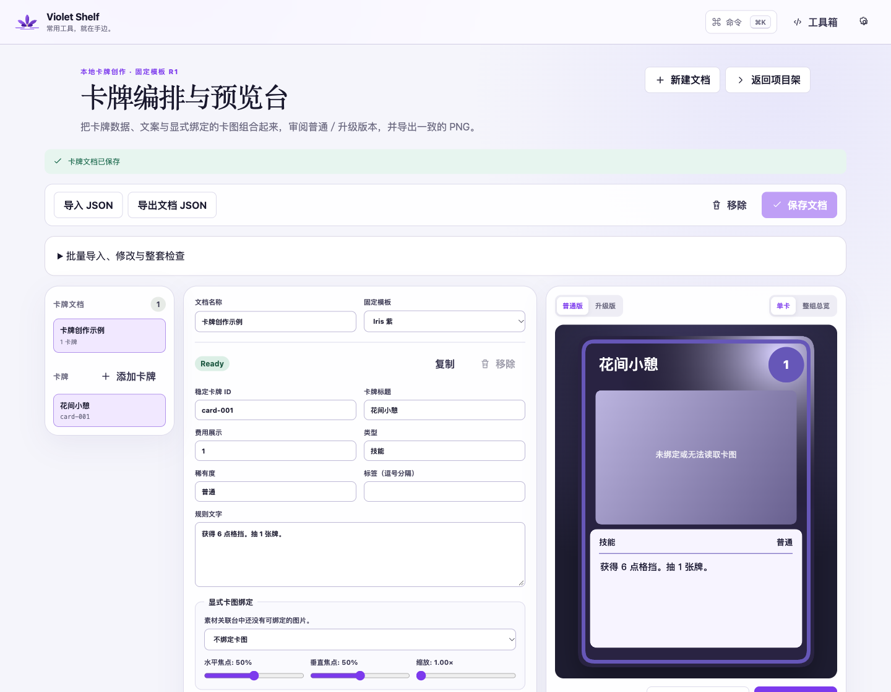

数值模型与行动时间线
内置数值工作台提供不同模型模板、受限公式、伤害与 DPS 计算，以及确定性行动时间线。调整输入后，可以把新的结果与原基线对照。
LOCAL DEVELOPMENT AND CREATIVE TOOLS
围绕创作资料、卡牌与数值实验组织本地工作台，支持独立工具扩展、结果导出与历史实验。
做游戏时，卡牌、图片、表格和概率问题常常散落在不同地方。我为自己做这个工具台，希望从一个具体素材或一组数据出发，很快看到可以继续使用的结果。
为卡牌整理普通与升级两面的文字和图片；检查表格之间的引用；在设计抽牌规则时比较不同条件的概率。完成后再把结果导出，带回正在制作的作品。
FROM IDEA TO EXPORT
Violet Shelf 把创作材料、卡牌文档和数值试验放进同一个本地工作台。工具之间通过明确的素材关联、输入和文件导出来配合。
在 Creative Library 中整理文本、图片与参考，记录材料来源和采用状态。
在 Card Studio 中填写效果文字、绑定图片，对照普通与升级两面，并检查整组卡牌。
把要比较的参数显式输入 Numeric Workbench，观察伤害、DPS 与行动时间线，保留实验基线。
按需要导出卡牌 JSON、PNG 或实验结果，在实际游戏中继续接入与调整。
工作台负责组织与试验；不同工具的文档仍各自保存。卡牌不会自动转换成游戏逻辑或数值模型。

LOCAL CREATIVE WORKFLOWS
从创作资料、卡牌和数值，到配表、概率与工程检查，按当前问题选择工具。
输入文本、图片和创作参考
结果整理来源、标签和采用状态，保存内容与关联，并使用独立快照恢复资料库。
输入版本化卡牌文档与明确关联的图片
结果编辑普通与升级两面、检查整组卡牌，并导出 JSON 或 PNG。
输入模型模板、数值参数与受限公式
结果计算伤害、DPS 和行动时间线，比较基线，并重跑历史实验。
输入选定的资源目录与内容条目
结果关联图片、音频或文档，预览资源，并维护明确的当前版本。
输入只读导入的 JSON 或 CSV
结果检查声明的正反向关系，定位缺失、歧义与循环。
输入卡组与抽取条件
结果比较精确无放回抽取概率，保存实验结果并按原记录重新计算。
输入属性、命名曲线与明确选定的图片
结果预览、暂停、重置并拖动矩形或图片，再显式导出 JSON。
输入语言映射与占位符
结果检查缺失、空值、重复和不支持的语法，再导出结果。
输入选定的本地工程证据包
结果只读查看构建、产物与会话之间的关联，辅助定位交付问题。
A WORKBENCH THAT CAN GROW
独立工具包通过 Workbench 接入桌面入口。工具声明自己的输入、命令与结果视图，宿主统一处理启停、运行状态和历史。
内置数值工作台提供不同模型模板、受限公式、伤害与 DPS 计算，以及确定性行动时间线。调整输入后，可以把新的结果与原基线对照。
保存实验所用的输入与工具身份。再次打开历史记录时使用对应版本，避免拿新公式解释旧结果。
工作台偏好、工具包和创作资料分别保存与恢复。恢复计划先说明缺少什么、需要重建什么，再由用户决定下一步。
LOCAL RESEARCH TOOLS
Violet 的本地研究工具还包括独立的 Semantic、Decision 与 Cognitive 服务。这些能力通过 CLI 或 MCP 使用，与桌面工具界面分开运行。
Semantic 在本地项目资料中检索，返回内容片段及来源，供后续判断与阅读使用。
Cognitive 提供上下文入口与观察记录；Decision 辅助比较候选，判断质量仍在实验中。
Daily Focus 从候选池中形成今日重点、次要事项和待复核项，支持手动反馈与结果记录。建议由人确认，不会自动执行任务。
目前面向本地使用与研究，生成耗时和建议质量仍需持续观察；这些服务尚未作为桌面应用中的一键功能提供。
GETTING STARTED
正在本地开发和使用，暂未开放下载。